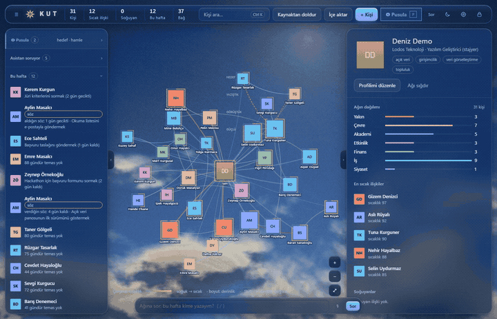
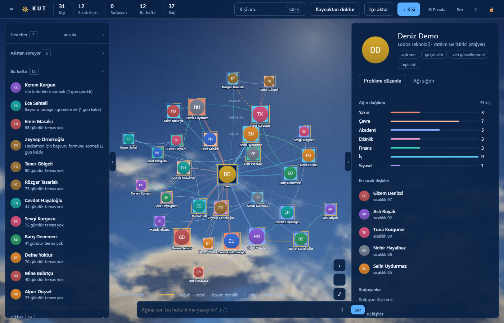
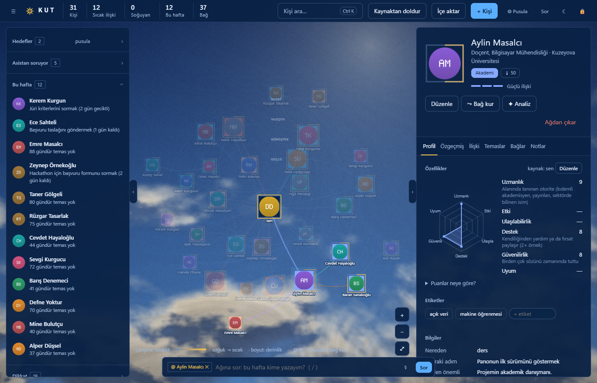
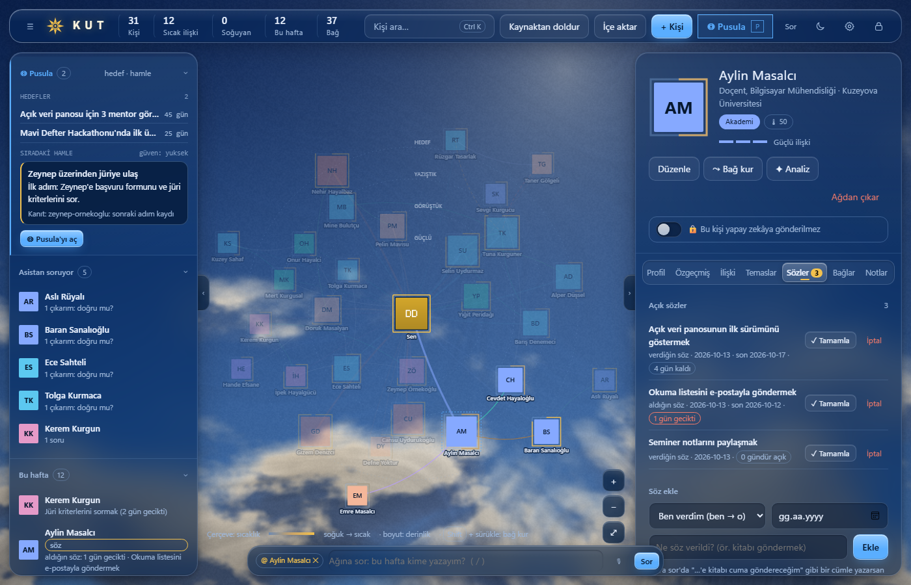
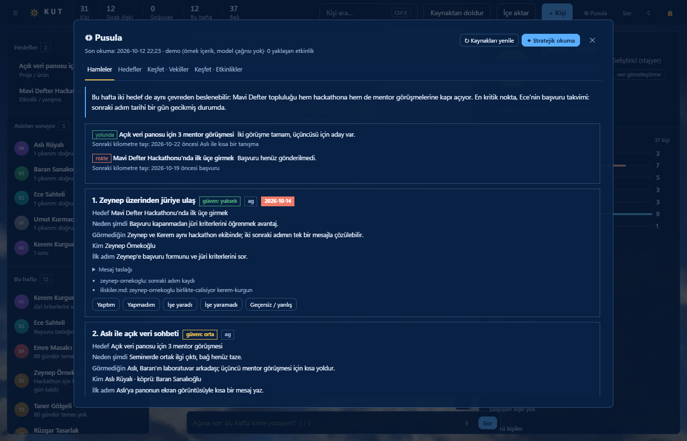
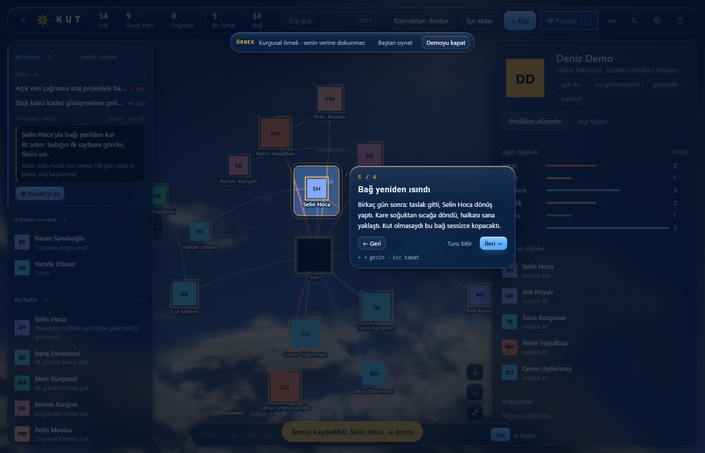

Asistan soruyor
Yapay zekânın kişiler hakkındaki çıkarımları sen onaylamadıkça dosyaya yazılmaz. Her biri için Doğru, Düzelt ya da Yanlış dersin; senin söylediğin her zaman önce gelir.
Tanıdığın insanları fotoğraflı bir haritada gör. Her görüşmeden sonra tek cümle not düş. Kimi ihmal ettiğini, kime ne söz verdiğini ve bu hafta kime yazman gerektiğini Kut hatırlasın. Hesap yok, bulut yok; verin düz Markdown dosyaları olarak diskinde durur.

Neler yapar
Hocaların, arkadaşların, mentorların, iş çevren: hepsi tek haritada, her biri kendi dosyasında. Sen yazarsın, Kut hatırlatır.
Ağ haritası
Renk kişinin türünü, halka ne kadar yakın olduğunu gösterir. Bağlar arkadaşlık, mentorluk, iş ortaklığı, akrabalık, rekabet ya da gerginlik olarak çizilir. Dikkat listesi bağlardan olası çıkar çatışmalarını işaretler.

Kişi kartı ve temas ritmi
Görüşmeden sonra tek cümlelik bir temas eklersin. Kut son temasa ve yakınlığa bakıp ihmal eşiğini hesaplar:
Altı ilişki puanı kayıtlardan hesaplanır: sıcaklık, derinlik, karşılıklılık, süreklilik, köprü, ortak zemin. “Puanlar neye göre?” bölümünde ölçütler açıkça görünür.

Sözler
“Kitabı göndereceğim”, “staj ilanını yollayacak”. Her söz kişinin kartında yönüyle ve son tarihiyle durur. Kut'a sor'a düz bir cümle yazman yeter:
Sen onaylamadan hiçbir şey yazılmaz. Söz, kişi dosyasında okunabilir bir satır olarak kalır:

Bu hafta ve Pusula
Bu hafta listesi tarihi gelen adımları, soğuyan bağları ve gecikmiş sözleri bir araya getirir; tek tıkla haritada yalnız onlar öne çıkar.
Pusula'ya hedeflerini yazarsın. İstersen yapay zekâ hedeflerini ve ağını okuyup her biri kanıtına bağlı hamleler önerir: kime, neden şimdi, ilk adım ne.

Yapay zekânın kişiler hakkındaki çıkarımları sen onaylamadıkça dosyaya yazılmaz. Her biri için Doğru, Düzelt ya da Yanlış dersin; senin söylediğin her zaman önce gelir.
WhatsApp sohbeti, rehber (.vcf), takvim (.ics), LinkedIn verisi (CSV) ve ders listesi. Önce önizleme görürsün, onaylarsan yazılır. Mesaj içeriği saklanmaz: yalnız kim, ne zaman, hangi kanal.
“Ayşe hocayla bugün konuştum, başvurum onaylanmış” gibi düz bir cümleyi temasa, beyana ve sonraki adıma ayırır. Her yazımdan önce kişinin eski hali arşive kopyalanır.
İstersen konuşarak not alırsın: Whisper sesi yazıya çevirir, EMA Lightning cevapları Türkçe okur. Hepsi bu bilgisayarda çalışır, ses diske yazılmaz.
“Bu dönem ISE 424 ve MATH 101 alıyorum” yazarsın; okulun seçiliyse hocaları ve ders saatlerini herkese açık sayfalardan kaynağıyla doldurur. Okul seçili değilse kapalıdır.
Açılışta PIN sorulur. Kilit sunucu tarafındadır: kilitliyken hiçbir kişisel veri gönderilmez. Bir süre işlem yapmazsan Kut kendini kilitler.
Önce bir örnekle gör
Kendi verini girmeden önce ilk açılış sihirbazındaki Önce bir örnekle göster düğmesine bas. Kurgusal bir ağda altı sahne oynar: soğumuş bir bağı fark eden Pusula, yakalanan bir söz, yeniden ısınan bir ilişki.
Demo ayrı ve geçici bir klasörde çalışır, senin verine dokunmaz, ağa ve modele çıkmaz. Kapatınca silinir.

Gizlilik
Her kişi bir Markdown dosyası. İstediğin editörle açar, yedekler, silersin. Kut bir sunucu çalıştırır ama yalnız kendi bilgisayarına, 127.0.0.1 adresine açılır.
--- ad: Aylin Masalcı tur: akademi kurum: Kuzeyova Üniversitesi rol: Doçent, Bilgisayar Mühendisliği yakinlik: 3 son_temas: 2026-09-22 sonraki_adim: Panonun ilk sürümünü göstermek neden_onemli: Projemin akademik danışmanı. ne_verebilirim: Öğrencileri için veri seti ve geri bildirim. --- # Aylin Masalcı ## Temas - 26.08.2026 · e-posta · Açık veri panosu fikrini anlattım, kaynak önerdi. - 22.09.2026 · mesaj · Seminer davetini iletti. ## Sözler - [ ] 2026-10-13 · o → ben · okuma listesini e-postayla göndermek (son: 2026-10-12)
| Ağa çıkabilen yol | Nereye | Ne zaman |
|---|---|---|
| Güncelleme denetimi | api.github.com, yalnız sürüm bilgisi; veri gönderilmez | ilk açılışta sorar |
| Ses kurulumu | PyPI, Hugging Face; sabit sürümler | yalnız “Evet” dersen |
| Okul siteleri | seçtiğin okulun herkese açık sayfaları | “Kaynaktan doldur” deyince |
| Vekilpedia, etkinlikler, OpenAlex/ORCID | herkese açık, girişsiz sayfalar | varsayılan kapalı |
| Uzak model | Anthropic, OpenAI ya da Google; Ollama bilgisayardan çıkmaz | yalnız sen kullanınca |
Listede olmayan bir yol yok. İki not: onayladığın etkin bir hedefin varsa stratejik okuma haftada bir kendiliğinden yenilenir (ayardan kapatılır). Codex ve Gemini kendi araçlarıyla diskteki dosyaları okuyabildiği için Kut onları seçerken ayrıca onay ister; hassas bir ağ için Claude Code ya da yerel Ollama daha güvenli seçenektir. Ayrıntılar README'nin Gizlilik bölümünde.
Kurulum
İlk açılışta bir PIN belirlersin; ardından kısa bir sihirbaz adını ve yapay zekâ seçimini sorar. Her adım atlanabilir.
Kut.exe.sha256 ile doğrulayabilirsin.Belgeler\Kut klasöründe durur.Yalnız standart kütüphane; kurulacak paket yok.
git clone https://github.com/koraykutlu/kutpy -3 kut.pywmacOS ve Linux'ta python3 kut.pyw. Tarayıcın 127.0.0.1:47318 adresinde açılır.
Claude Code, Codex ya da benzeri bir ajanın varsa ona şunu söylemen yeter:
https://github.com/koraykutlu/kut adresindeki Kut'u kur.Ajan depodaki kurulum talimatını izler, kişisel verini depo dışında bir klasöre koyar ve dış kaynakları senin onayın olmadan açmaz.
Güncelleme uygulamanın içinden yapılır: yeni sürüm SHA-256 ile doğrulanmadan kurulmaz, önceki sürüm geri dönüş için saklanır, veri klasörüne dokunulmaz.
Kut MIT lisanslı. Kodu oku, kendin derle, hata bildir ya da katkı ver.